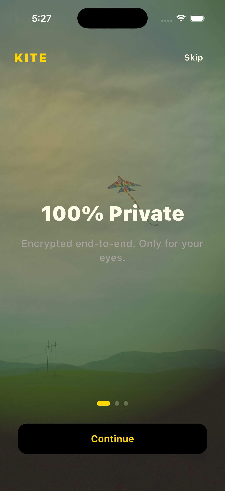
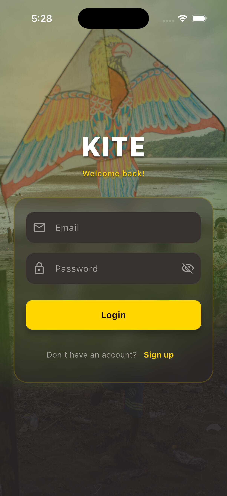
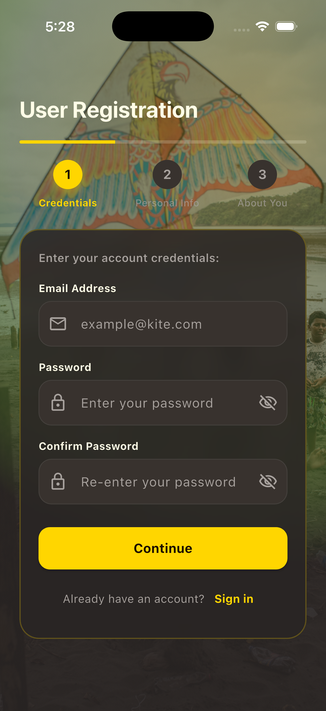
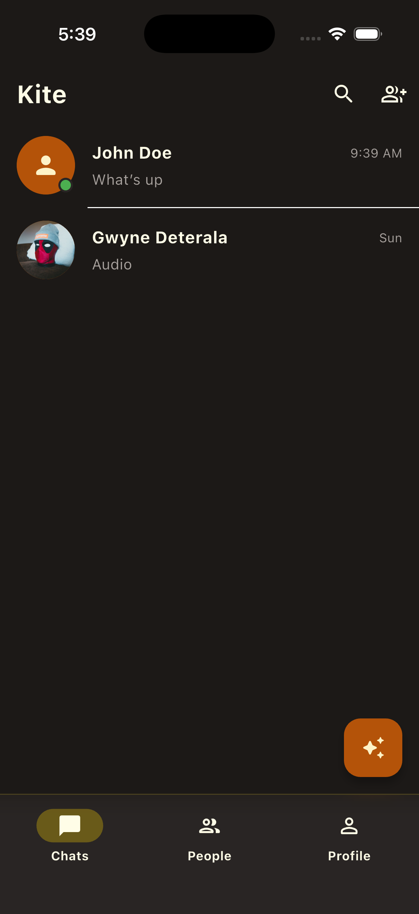
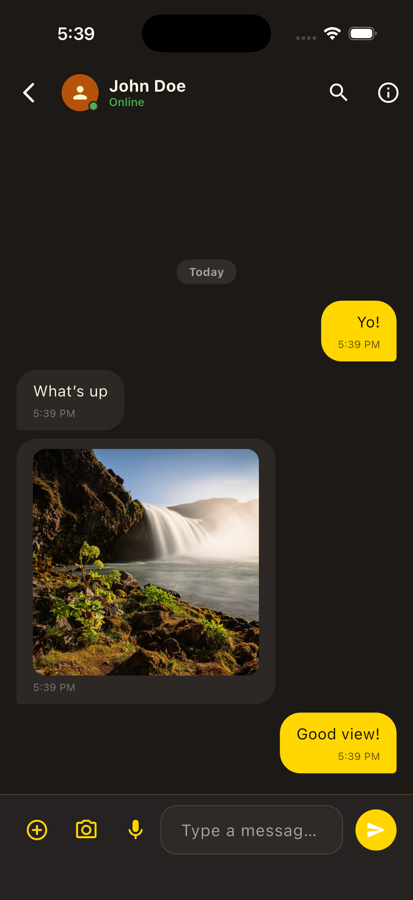
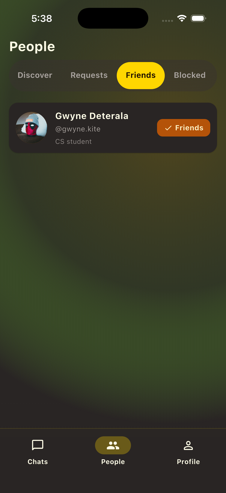
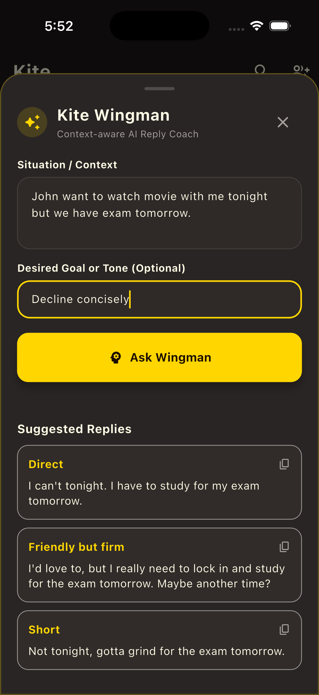

Kite Project Documentation
I created Kite to serve as a practical, production-style reference for building a modern Spring Modulith application using an enterprise-grade structure centered around Package-by-Feature and Clean Architecture.
While designing Kite, I wanted to address several core software engineering challenges within a single cohesive project:
- Spring Modulith Architecture: Demonstrating how a modular monolith can maintain strict domain boundaries using Spring Modulith modules (
conversation,social,media,profile,security,presence) and internal application events without the operational complexity of distributed microservices. - Client-Side End-to-End Encryption (E2EE): Implementing zero-knowledge privacy where the mobile client applications bear full responsibility for encrypting and decrypting message text and binary media payloads before transmission.
- Real-Time WebSockets & Event-Driven Signaling: Showing how WebSockets (STOMP) integrate seamlessly with Spring Modulith's built-in application events to trigger real-time message delivery, inbox synchronization, and friend request notifications.
App Showcase
Authentication Flow



Messaging & Social



|
 |
AI wingmanYour Personal Conversation AssistantGenerates context-aware conversation starters, smart replies, and real-time advice to keep chats engaging using LangChain4j. |
Architectural Philosophy & Core Concepts
Modular Monolith with Package-by-Feature
Rather than splitting code by technical layers (e.g., placing all controllers or services in global packages), Kite organizes backend code strictly by feature domain. Each module encapsulates its domain models, application logic, repositories, and REST/WebSocket controllers:
conversation: Chat room management, direct messaging, group operations, and STOMP message broadcasting.social: User discovery, friend relationships, request acceptance, and automatic chat initialization.media: GridFS binary storage for unencrypted public avatars and encrypted opaque file blobs.profile: User profile details, public key management, and theme preferences.notification: Push notifications and internal Spring Modulith event listeners for chat alerts and social activities.presence: User online/offline state tracking over WebSockets.security: JWT authentication, Spring Security filter chains, and user security context.shared: Cross-cutting domain primitives, base value objects (such asUserIdandConversationId), global exception handlers, and common mappers.
Client-Centric End-to-End Encryption
Kite adopts a zero-knowledge security model. The central server operates strictly as an untrusted message broker and media host. Key cryptographic responsibilities are delegated to the Flutter client:
- Symmetric Binary Media Cipher: Binary files (photos, videos, audio notes, and documents) are encrypted locally using single-use AES-256 GCM keys.
- Asymmetric Envelope Exchange: Symmetric media keys and metadata are sealed inside X25519 asymmetric envelopes (or shared Group Keys) that only intended chat members can decrypt.
Technology Stack Overview
| Layer | Technology | Engineering Rationale |
|---|---|---|
| Mobile Client | Flutter 3.x / Dart | Single codebase for cross-platform iOS & Android execution with native cryptographic performance |
| Client Security | Flutter Secure Storage | Hardware-backed key isolation (iOS Keychain and Android KeyStore) |
| Client Cryptography | cryptography package |
Client-side X25519 ECDH key exchange & AES-256 GCM ciphers |
| Backend Engine | Spring Boot 3.x / Java 21 | High-performance enterprise runtime leveraging Java 21 features |
| Modular Framework | Spring Modulith 2.x | Domain module verification and in-memory application event publishing |
| Event Externalization | RabbitMQ 4.x (AMQP) | Asynchronous event broker integrated via spring-modulith-events-amqp |
| Database & Storage | MongoDB (Replica Set rs0) |
Primary document store for user accounts, chats, and metadata |
| Media Object Store | MongoDB GridFS | Binary chunked storage for media uploads and public user avatars |
| Schema Migration | Flamingock 1.4.x | Code-based MongoDB database migrations |
| Admin Dashboard | Mongo Express | Administrative web UI dashboard for MongoDB (http://localhost:8081) |
| Real-Time Messaging | Spring WebSocket STOMP | Structured pub/sub WebSocket channels for room messages and inbox syncing |
| Object Mapping | MapStruct 1.6.3 | Type-safe DTO and entity transformations |
| OpenAPI / Swagger | Springdoc OpenAPI 3.0 | Automated OpenAPI 3.0 contracts and interactive Swagger UI explorer |
Quickstart Guide
1. Provision Infrastructure
Start MongoDB and required containers using Docker Compose:
2. Launch Backend Service
Build and run the Spring Boot backend server:
The REST API and STOMP WebSocket broker will run athttp://localhost:8080/kite/api/v1.
3. Launch Mobile Application
Run the Flutter mobile app on an iOS Simulator or Android Emulator: